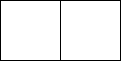
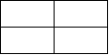
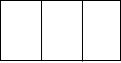

Code Tour 2020 - Challenge #1 (Thi Bổ Sung)
Lớp học vẽ
Ngày đầu tiên Peter đi học lớp cô Daisy, đây là lớp học vẽ đặc biệt, lớp học vẽ Trí Tuệ Nhân Tạo. Cô Daisy sẽ cho máy xác định vẽ trước, sau đó các em học sinh mới bắt đầu vẽ sau. Cô cho là số đường thẳng cần kẻ. Máy sẽ vẽ một bảng hình chữ nhật gồm nhiều ô, mỗi ô là một hình chữ nhật từ đường thẳng, sao cho số lượng ô được tạo ra của bảng là lớn nhất. Từ những hình vẽ sẵn của máy, các em học sinh thêm những nét vẽ của mình để tạo thành các hình vẽ sao cho mang nhiều ý nghĩa nhất.
Bạn hãy giúp cô Daisy, viết một chương trình xác định số ô lớn nhất có thể được tạo ra nhé.
Minh họa:
- thì bảng có thể vẽ là:
- thì bảng có thể vẽ là:

- thì ta có hai cách vẽ, tuy nhiên số ô lớn nhất có thể tạo ra là


Dữ liệu nhập
Dòng đầu tiên gồm một số nguyên dương - số lượng test.
Mỗi test chứa một số nguyên dương - số lượng đường thẳng.
Dữ liệu xuất
Mỗi test in trên một dòng - một số nguyên duy nhất là số lượng ô lớn nhất được tạo ra.
Ví dụ
| input |
| 3 4 5 6 |
| output |
| 1 2 4 |
Nộp bài
xxxxxxxxxxusing namespace std;int main() { int t; for (cin >> t; t; t--) { long long n; cin >> n; if (n < 4) cout << 0; else { long long nn = n-2; long long last = nn/2; if (nn % 2 == 1) cout << last*(last+1); else cout << last * (last + 1) - last; } cout << endl; }}thông tin
- Giới hạn thời gian: 1000ms
- Giới hạn bộ nhớ: 512MB
- Độ khó: Bí mật
- Nguồn bài: Big-O
- Bộ test: Big-O